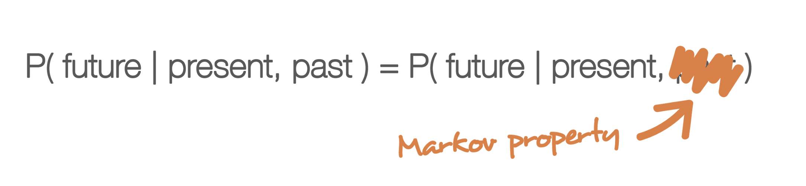
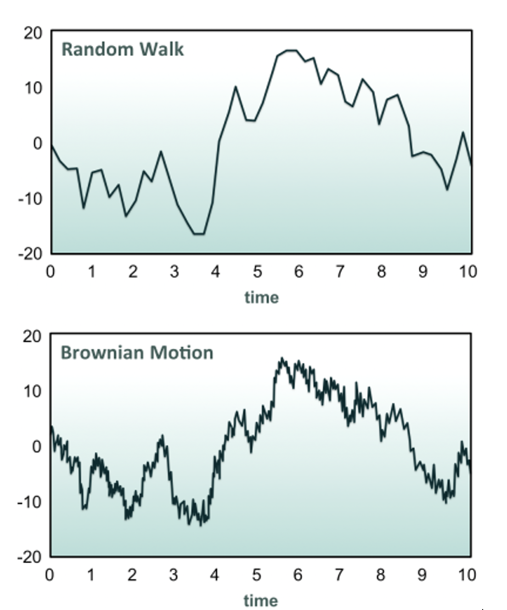

A Detailed Analysis and Derivation of the Black-Scholes Pricing Formula
A sensible way to introduce the Markov property is through a sequence of random variables Zi, which can take one of two values from the set {1,-1}. This is known as a coin toss. We can calculate the expectations of Zi:
The key point is that the expectation of Zi has no dependence on any previous values within the sequence. Let us take the partial sums of our random variables within our coin toss, which we will denote by Si:
We can now calculate the expectations of our partial sums, using the
linearity of the expectation operator :

We see that, again there is no dependence on the expectation of Si of any previous value within the sequence of partials sums. We can extend this to discuss conditional expectation. Conditional expectation is the expectation of a random variable with respect to some conditional probability distribution. Hence, we can ask that if i=4 (i.e. we carry out four coin tosses),what does this mean for the expectation of S5?
That is, the expected value of Si is only dependent upon the previousvalues Si-1, not on any values prior to that. This is known as the Markov Property. Essentially, there is no memory of past events beyond the point our variable is currently at within the sequence. Nearly all financial models discussed in these articles will possess the Markov property.
An additional property that holds for our sequence of partial sums is the Martingale property. It states that the conditional expectation of the sequence of partial sums, Si is simply the current value:
Essentially, the martingale property ensures that in a "fair game", knowledge of the past will be of no use in predicting future winnings.
These properties will be of fundamental importance in regard to defining Brownian motion, which will later be used as a model for an asset price path.
In the previous discussion on the Markov and Martingale properties, a discrete coin toss experiment was carried out, with an arbitrary number of time steps. The current goal is to work towards a continuous-time random walk, which will provide a more sophisticated model for the time-varying price of assets. In order to achieve this, the number of time steps will need to be increased. However, the manner in which they are increased must occur in a specific fashion, so as to avoid a nonsensical (infinite) result.

Consider a continuous real-valued time interval [0,T], T>0. In this interval N coin tosses will be carried out, which each take a time T/N and hence are spaced equally. Concurrently, the payoff returned from each coin toss will be modified. The sequence of discrete random variables representing the coin toss is Zi∈{-1,1}.
A further sequence of discrete random variables, (Zi ) ̃∈T/N,-T/N, can be defined. The definition of such a sequence of DRVs is used to provide a very specific quadratic variation of the coin toss.
The quadratic variation of a sequence of DRVs is defined to be simply the sum of the squared differences of the current and previous terms:
For Zi, the previous coin toss random variable sequence, the quadratic variation is given by:
Thus, by construction, the quadratic variation of the amended coin toss (Zi ) ̃ is simply the total duration of all tosses, T.
Importantly, note that both the Markov and Martingale properties are retained by (Zi ) ̃ . As N→∞ the random walk coin toss does not diverge. If the value of the asset at time t, with t∈[0,T], is given by S(t), then its conditional expectation at the end of the interval, given that S(0)=0, is E(S(T))=0 with a variance of E(〖S(T)〗2)=T.
Although the technical details will not be discussed, as the number of steps N becomes infinite, the Wiener process is obtained, more commonly called a standard Brownian motion, which will be denoted by B(t). Formally, the definition is given by:
A sequence of random variables B(t) is a Brownian motion if B(0)=0, and for all t,s such that s,t, B(t)-B(s) is normally distributed with variance t−s and the distribution of B(t)-B(s) is independent of B(r) for r≤s.
Standard Brownian motion has some interesting properties. In particular:
The previous discussion on Brownian motion and the Wiener Process we introduced the standard Brownian motion, as a means of modelling asset price paths. However, a standard Brownian motion has a non-zero probability of being negative. This is clearly not a property shared by real-world assets - stock prices cannot be less than zero. Hence, although the stochastic nature of a Brownian motion for our model should be retained, it is necessary to adjust exactly how that randomness is distributed. In particular, the concept of geometric Brownian motion (GBM) will now be introduced, which will solve the problem of negative stock prices.
However, before the geometric Brownian motion is considered, it is necessary to discuss the concept of a Stochastic Differential Equation (SDE). This will allow us to formulate the GBM and solve it to obtain a function for the asset price path.